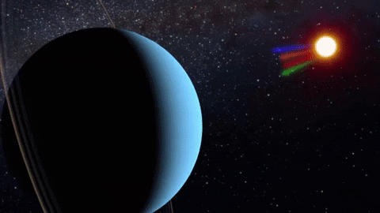

El sistema solar está formado por el Sol y todos los astros que giran a su alrededor. Estos incluyen planetas, planetas enanos y cuerpos pequeños del sistema solar
El Sol, estrella de nuestro sistema solar, constituye más del 99% de la masa total del sistema. Se formó hace aproximadamente 4.5 billones de años y se encuentra a unos 150 millones de kilómetros de la Tierra.
Mercurio es un planeta rocoso, siendo el más cercano al sol y el más pequeño. Se ubica a una distancia promedio de 58 millones de kilómetros del sol. Las temperaturas en su superficie son extremas; durante el día alcanzan los 430 °C y en las noches descienden hasta los -173 °C. Su diámetro es de 4879 kilómetros.
Venus es un planeta rocoso, siendo el más cercano a la Tierra. Se encuentra a una distancia del sol de 108 millones de kilómetros y tiene un diámetro de 12,104 km. No posee satélites. La temperatura en su superficie varía desde -40 °C hasta 499 °C.
La Tierra es el planeta de la vida. Se formó hace 4800 millones de años. Es el quinto planeta en tamaño y el tercero más lejano al sol, a una distancia promedio de 150 millones de kilómetros. Es un planeta rocoso. Tiene un único satélite, que es la Luna. Su diámetro es de 12,756 km. La temperatura en su superficie varía desde -80 °C hasta 57 °C.
Marte es frío, rojizo y tiene una atmósfera muy tenue. Su tamaño es casi la mitad del de la Tierra, con un diámetro de 6794 km. En sus polos hay hielo, lo que hizo pensar que quizás existiera vida en Marte. Su temperatura oscila entre -87 °C y -5 °C. Además, cuenta con dos satélites, Fobos y Deimos. Es un planeta rocoso.
Júpiter es el planeta más grande del sistema solar. Es gaseoso, pero tiene un pequeño núcleo rocoso. Destaca una zona ovalada y oscura, La Gran Mancha Roja, que es una tormenta permanente con vientos que superan los 400 km/h. Posee delgados anillos de polvo que no pueden verse desde la Tierra. Tiene muchos satélites naturales, algunos muy grandes, como Ío y Europa. Su temperatura oscila entre -163 °C y -75 °C. Su diámetro es de 142,984 km.
Saturno es el segundo planeta más grande del sistema solar. Posee siete anillos que forman una estructura muy grande y vistosa. Además, cuenta con muchos satélites naturales como Titán, Jápeto o Encélado. Su diámetro es de 120,500 km. Es un planeta gaseoso. Su temperatura oscila entre -176 °C y -139 °C.
Urano es más pequeño que Júpiter y Saturno. Posee una coloración azul y temperaturas muy bajas. Su eje de rotación está casi acostado, por lo que sus anillos se encuentran en posición vertical. Asimismo, tiene muchos satélites, entre ellos Ariel y Miranda. Sus anillos no pueden ser vistos desde la Tierra. Es un planeta gaseoso. Su diámetro es de 51,118 km. Su temperatura oscila entre -215 °C y -197 °C.
Neptuno es el último planeta del sistema solar y el más frío. Es el más pequeño de los planetas exteriores. Tiene un color azul intenso y posee delgados anillos de pequeñas rocas y partículas de polvo, los cuales no pueden ser vistos desde la Tierra. Se conocen 13 satélites, como Tritón y Nerida. Su diámetro es de 49,570 km. Su temperatura oscila entre -230 °C y -223 °C.